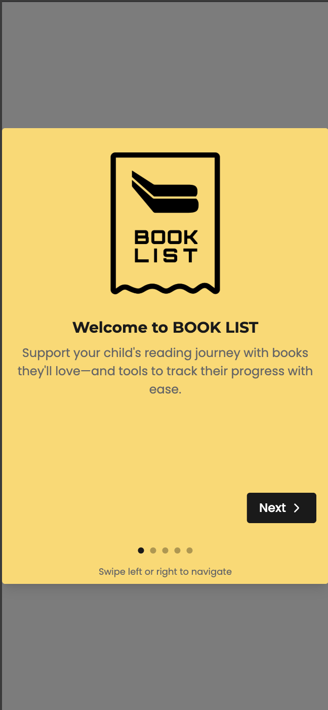
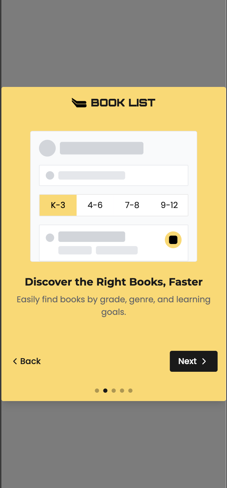
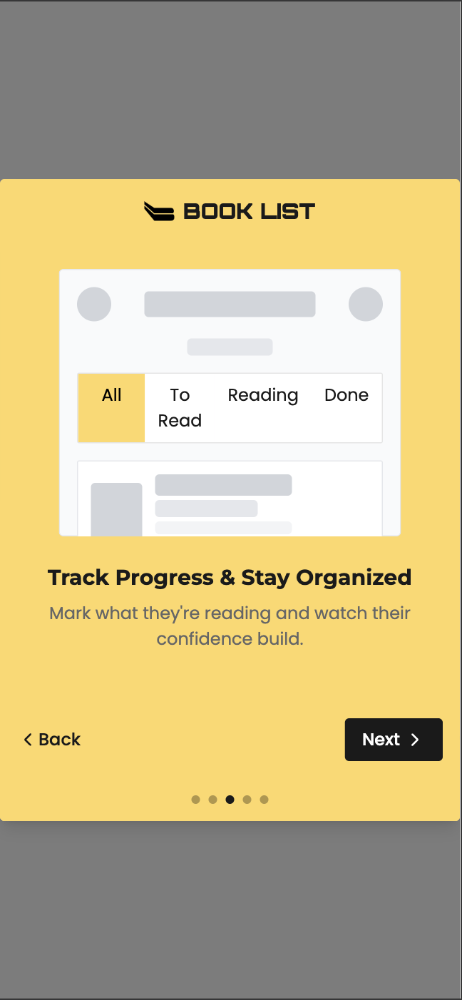
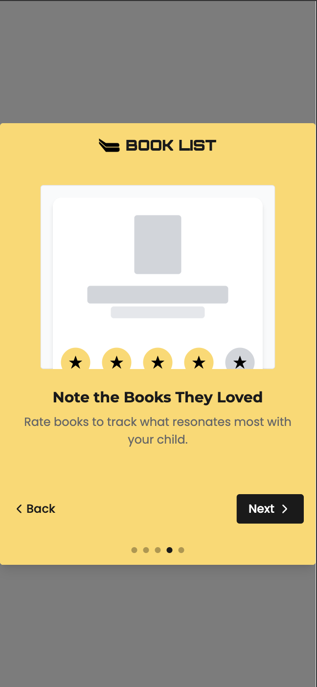
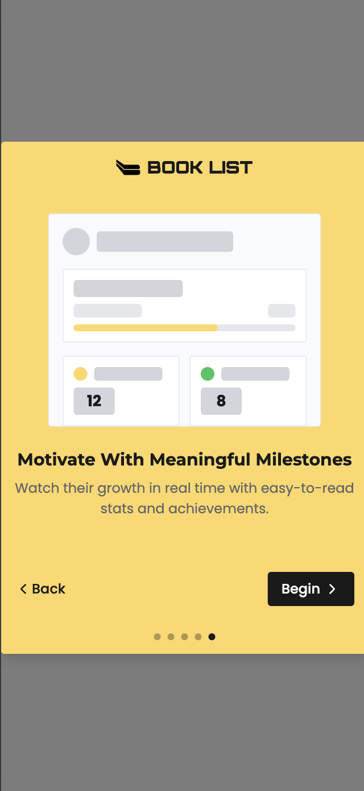

Book List
Empowering parents to guide their child's reading journey.

Project overview
Book List is an app designed to help parents easily discover curated book lists suited to their child's reading level and track progress with joy and confidence. It blends educational utility with emotional motivation, supporting parents as they build strong reading habits, one book at a time.
The challenge
Parents want to nurture their child's reading journey but often face:
- Overwhelm from too many book choices
- Lack of clear visibility into progress
- Difficulty keeping reading fun, not forced
Our goal: build a simple, rewarding experience for parents to find the right books and track reading progress without friction.
Discovery and insight
Using the Jobs to Be Done (JTBD) framework, we uncovered the parent's core motivation: when helping a child build strong reading habits, parents want to discover curated books suited to their child's level and interests, so they can track progress and make sure the reading material is right.
This became the foundation of our product strategy:
- Functional job: find and organize books effectively.
- Emotional job: feel confident and proud in guiding literacy growth.
- Social job: be seen as an engaged, supportive parent.
Product strategy and experience pillars
We anchored the design around four core pillars:
- Guided onboarding for parents: curated discovery, progress tracking, rating and milestones.
- Curated discovery by grade, mood and genre: grade level, mood or theme, and learning goal. Parents preferred pre-curated lists over algorithmic recommendations.
- Intuitive progress tracking: To Read, Reading and Done. We simplified from five states to three after testing.
- Motivation through ratings and achievements: completion percentage, ratings breakdown, most-read genre and lists completed. Lightweight gamification was added to boost engagement.
From ideas to implementation





Design process
- Visual representation of progress
- Segmented tabs for To Read, Reading and Done
- Achievements tied to milestones
- Customizable reading reports
This guided the MVP roadmap, balancing delight with core value delivery.
Outcome
- Simple: minimal steps from discovery to tracking
- Encouraging: language and visuals celebrate progress
- Empowering: parents feel in control
"It feels like I'm finally part of my child's learning, not just monitoring it."
Next steps
- Custom book lists
- Share and discover lists
- Sign-in and multiple profile support
- Teacher-recommended lists and tracking
Key takeaway: progressive disclosure and celebration of small wins helped parents feel confident, not overwhelmed.
Visit Book List